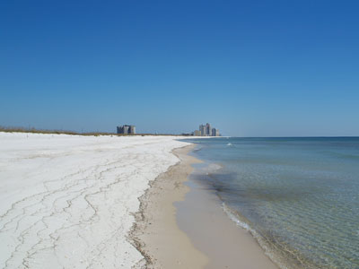
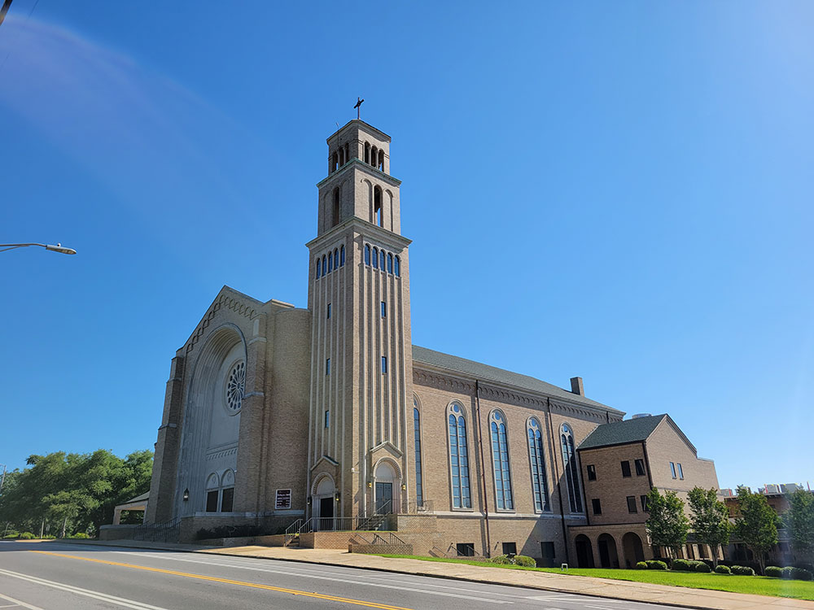
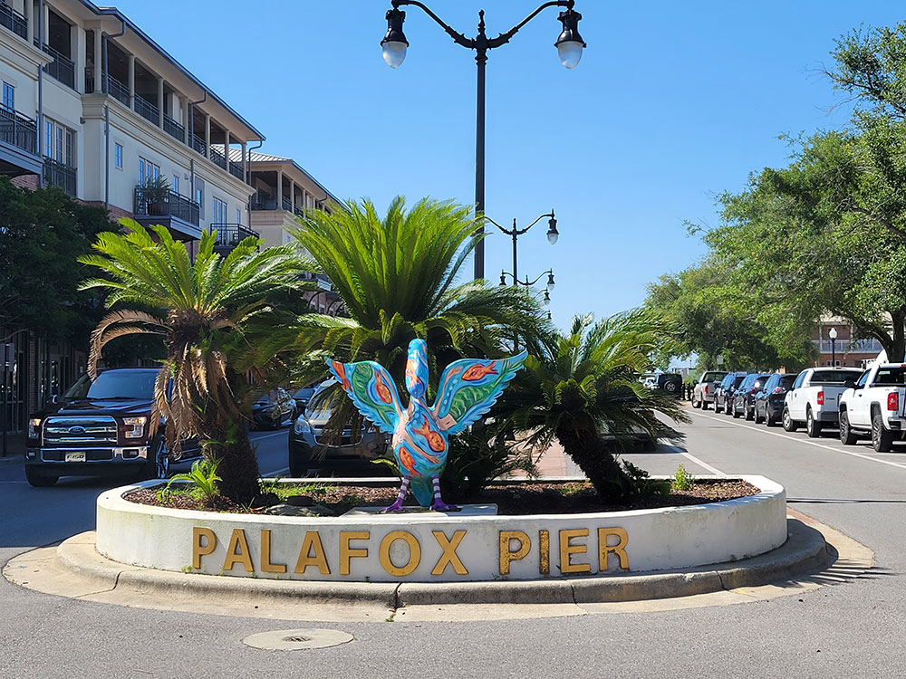
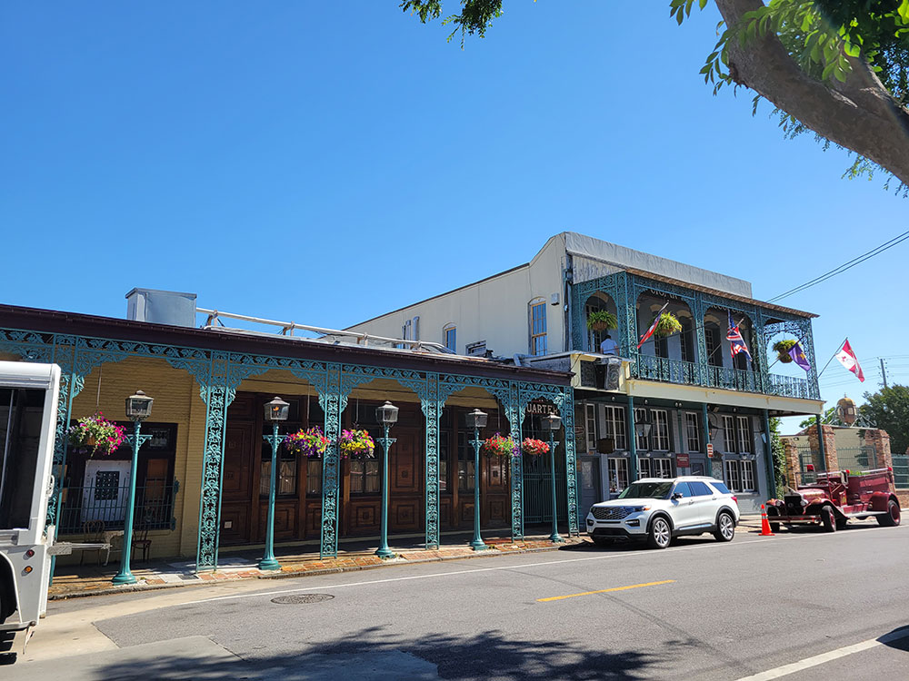

.jpg){kind=link}
Westernmost city in the Florida Panhandle, and is the site of the first Spanish settlement within the borders of the continental United States in 1559
Featured Locations

Ebyabe, CC BY-SA 3.0, via Wikimedia Commons; Image Size Adjusted

Big Lagoon State Park
705-acre Florida State Park located on the northwestern Florida coast, approximately 10 miles southwest of Pensacola on Gulf Beach Highway
Fort Pickens
Pentagonal historic United States military fort on Santa Rosa Island in the Pensacola, Florida, area
Johnson Beach National Seashore
Protected Gulf Coast beach featuring undeveloped white-sand shorelines, coastal dunes, wildlife habitat, swimming areas, nature trails, and scenic waterfront recreation.

Jeff P from Berkeley, CA, USA, CC BY 2.0, via Wikimedia Commons; Image Size Adjusted
Pensacola Beach
Community located on a barrier island situated south of Pensacola in the Gulf of Mexico
Pensacola Historic District
Historic district located in Pensacola containing the Historic Pensacola Village, the T.T. Wentworth Jr. Florida State Museum, Seville Square, and Plaza Ferdinand VII
Pensacola Museum of History at the University of West Florida
Museum of history located in the Plaza Ferdinand VII in Pensacola, and is part of the Historic Pensacola Village museum complex

Ebyabe, CC BY-SA 3.0, via Wikimedia Commons; Image Size Adjusted

Perdido Key
Barrier island in northwest Florida and southeast Alabamaa
Saenger Theatre
Historic theater in Pensacola, added to the U.S. National Register of Historic Places
Tarkiln Bayou Preserve State Park
4,290-acre preserve 10 miles (16 km) southwest of Pensacola, is home to four species of endangered pitcher plants, as well as other rare and endangered plant species
Overview
Pensacola is a city in the western Florida Panhandle on Pensacola Bay, known as the "City of Five Flags" because it has been ruled by Spain, France, Britain, the Confederacy, and the United States. It is also called the "Cradle of Naval Aviation" because it is home to Naval Air Station Pensacola and the National Naval Aviation Museum, and it is the home base of the Blue Angels flight demonstration team. The city is also famed for its sugar-white quartz sand beaches on the Gulf Islands National Seashore.
Visitors come to Pensacola for Pensacola Beach and Gulf Islands National Seashore, for the National Naval Aviation Museum, and for the Pensacola Historic District. They also come for Fort Pickens, for Blue Angels practice shows, and for fresh Gulf seafood, and the city is a quieter, less expensive alternative to the beaches farther east on the Emerald Coast.
History
In 1559, the Spanish explorer Tristán de Luna y Arellano established a settlement at Pensacola Bay, one of the first European attempts to colonize what is now the United States, but a hurricane destroyed his fleet and it was abandoned in 1561. The Spanish returned in 1698 and built a presidio, and the city changed hands among Spain, France, and Britain before becoming part of the United States in 1821. During the Civil War, Fort Pickens remained in Union hands while the city was held by the Confederacy for a time. The Pensacola Navy Yard, founded in 1826, became the first naval air station in the country in 1914, and the Navy remains a major part of the economy.
Sightseeing and Popular Landmarks
The Pensacola Historic District includes Seville Square, Palafox Street, and Historic Pensacola Village, with historic homes and museums from the colonial period. Fort Pickens, a brick fort on Santa Rosa Island, was in use from 1834 until World War II and is part of the national seashore, and the Pensacola Lighthouse offers views of the bay. The Saenger Theatre is a restored 1925 movie palace, and Pensacola Beach has a pier, a boardwalk, and the Pensacola Beach Gulf Pier.
Culture and Museums
The National Naval Aviation Museum on the Naval Air Station is one of the largest aviation museums in the world and is free to visit, with more than 150 aircraft, and visitors can watch Blue Angels practice sessions. The Pensacola Museum of History and the Historic Pensacola Village cover the city's colonial and Civil War past, and the Pensacola Museum of Art and the Saenger Theatre host exhibits and concerts. The city is known for festivals such as the Pensacola Seafood Festival and Mardi Gras.
Parks
The Gulf Islands National Seashore protects barrier islands with white sand beaches, dunes, and historic forts, including Fort Pickens, Fort Barrancas, and Perdido Key. Pensacola Beach and Perdido Key have quartz sand beaches, and Big Lagoon State Park and Tarkiln Bayou Preserve offer trails and bird watching. The Gulf Breeze Zoo is nearby.
Seasons and Weather
Pensacola has a humid subtropical climate. Summers are hot and humid, with highs in the low 90s°F, and winters are mild, with highs in the 60s°F and very little snow. The beach season runs from April through October, and hurricane season runs from June to November, with major storms including Ivan in 2004 and Sally in 2020.
This article uses material from Wikipedia as well as information from official tourism and institutional sources. Key references include Visit Pensacola, National Naval Aviation Museum, National Park Service Gulf Islands National Seashore, Historic Pensacola, Visit Florida, and National Weather Service Mobile. Wikipedia material is from the article "Pensacola, Florida", and is available under the Creative Commons Attribution-Share-Alike License 3.0.


